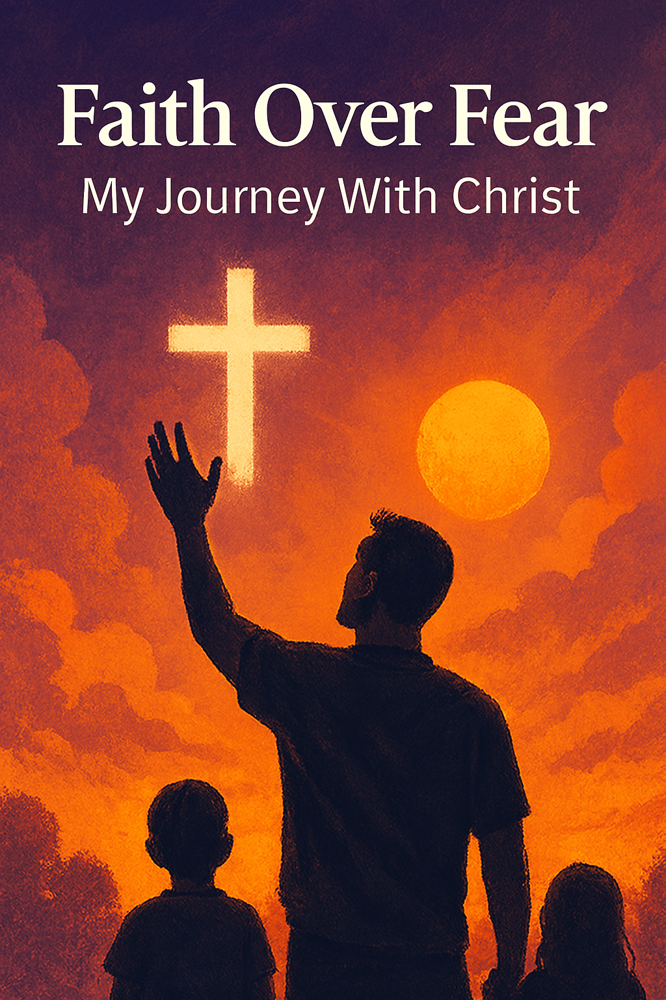

Faith Over Fear: My Journey With Christ
Published: March 10, 2025

The world today is chaotic. From bad news to global pressure, it's easy to feel overwhelmed. But even in the
middle of storms, I’ve found something stronger than fear—faith in Jesus Christ.
My relationship with Christ isn’t a religious routine. It’s the foundation of how I live, lead, and love. I don’t fast just for health benefits—I fast for clarity and direction. I don’t tithe just because I’m told to—I tithe to honor the Source that provides everything I have.
Every business I create—whether it’s SnapFlow, Arion, or the Vault—is guided by purpose. I don’t just want to build wealth. I want to build legacy. That means anchoring everything I do to something eternal.
“What good is it for someone to gain the whole world, yet forfeit their soul?†— Mark 8:36
Fear tells you to play small. Faith calls you to walk big. Fear says “you’re not ready.†Faith says “you were born for this.†And every time I’ve chosen faith, God’s opened doors that no man could close.
When I rise early to build, when I study to sharpen my mind, when I push through to lead my family—it’s not just hustle. It’s purpose with spiritual armor.
I believe God is using this platform, this book, this AI, and this blog to reach people—not just to make money, but to make an impact.
So when the world shakes, I don’t. When systems crash, I rise. Because I’m not standing on fear—I’m standing on faith.
3 Things I Do to Strengthen My Walk Daily:
- ☀️ Start every morning with prayer and vision review
- 📖 Read at least one Proverb or Psalm every day
- 🧠Play worship, not worry (music sets my atmosphere)
I invite you to walk this out too. You don’t have to be perfect. You just have to be willing. And when you choose faith over fear, you unlock the kind of strength that builds families, changes legacies, and outlives empires.
“For God has not given us a spirit of fear, but of power, love, and a sound mind.†— 2 Timothy 1:7